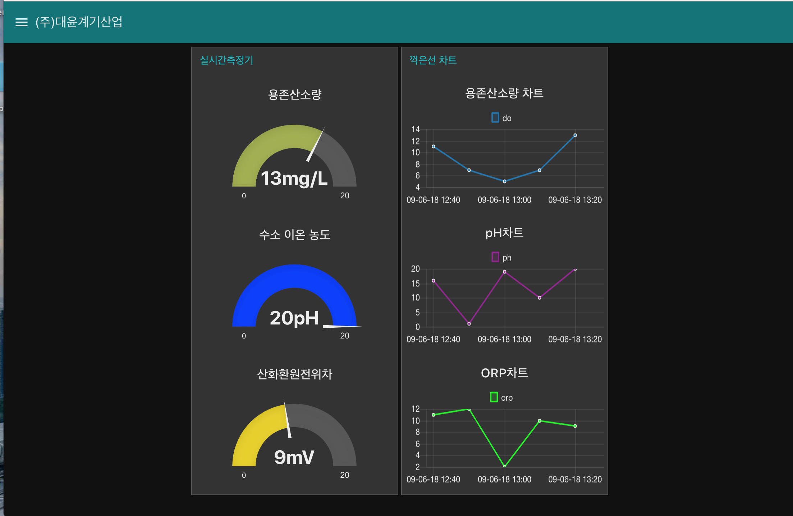
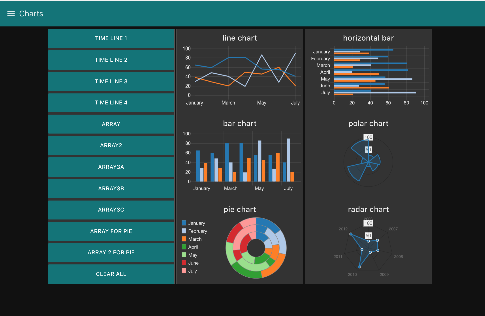
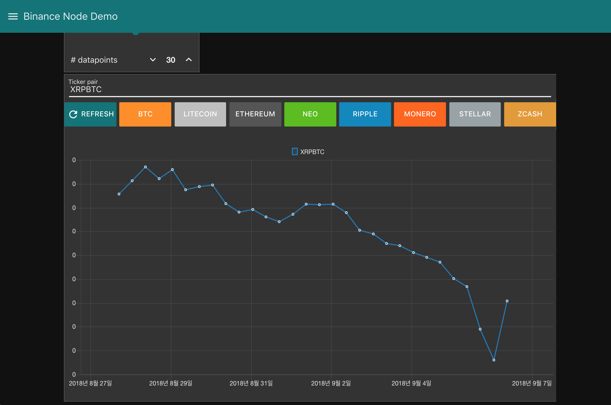

(주)대윤계기산업 소프트웨어 저장소
안드로이드앱
제품자료(Keynote)
(주) 대윤계기산업 모니터링 앱 개발 - Beta Version
개요
본 프로젝트는 (주)대윤계기산업 계측기를 활용한 센서 데이터 모니터링을 목적으로한다.
# 개발 기획서
## 추진배경
IOT의 중요성이 부각됨에 따라 네트워크로 연결된 객체들이 서로 통신을 하며 유용한 데이터들을 활용하여 기업,공장,정부기관에 솔루션을 제공하여 고부가가치의 비즈니스를 창출할수 있다.
## 개발 목표 및 내용
NPM(Node Package Manager)의 강력한 라이브러리
효과적인 I/O 처리(비동기통신으로 싱글스레드 상에서 고성능처리)
IOT 기기들은 기본적으로 이벤트에 의해 동작(어떤 조건이 발생했을때 실행)



 ### 개발 목표
보안·안전성(비동기IO)·사용자편리성
### 개발 내용
### 개발 범위
Web Interface: 게이지 차트, 로그인시스템, 알람(위험경보, 고장수신)
Mobile App: android, ios
### 시스템 구조
Google Cloud
docker: mysql, node-red
connect: python
### 일정
- 8/30 ~ 9/2 : 시스템 구상
- 9/3 ~ 9/14 : 개발 진행
- UI구현(차트, 게이즈)
- db구현, api 통신
- 계측기 연결 통신
- 앱개발
- 9/14 ~ 9/17 : 테스트
- 웹 인터페이스 테스트
기획
----
Fetches a single article of the specified id.
* __parameters__
* id : a article id which you wants to load
* onload : a callback for handling the article loaded
* onerror : a callback for handling the error step
* __onload__
* article : the detailed article
* html : the content HTML of the article
* upvote : dq
* downvote : awg
* __onerror__
* status_code : the status code which `XMLHttpRequest` returns
```js
ib_load_article(
12345678,
function (article) {
article.html;
article.upvote;
article.downvote;
},
function (status_code) {
console.log("on error iya...");
});
```
### 개발 목표
보안·안전성(비동기IO)·사용자편리성
### 개발 내용
### 개발 범위
Web Interface: 게이지 차트, 로그인시스템, 알람(위험경보, 고장수신)
Mobile App: android, ios
### 시스템 구조
Google Cloud
docker: mysql, node-red
connect: python
### 일정
- 8/30 ~ 9/2 : 시스템 구상
- 9/3 ~ 9/14 : 개발 진행
- UI구현(차트, 게이즈)
- db구현, api 통신
- 계측기 연결 통신
- 앱개발
- 9/14 ~ 9/17 : 테스트
- 웹 인터페이스 테스트
기획
----
Fetches a single article of the specified id.
* __parameters__
* id : a article id which you wants to load
* onload : a callback for handling the article loaded
* onerror : a callback for handling the error step
* __onload__
* article : the detailed article
* html : the content HTML of the article
* upvote : dq
* downvote : awg
* __onerror__
* status_code : the status code which `XMLHttpRequest` returns
```js
ib_load_article(
12345678,
function (article) {
article.html;
article.upvote;
article.downvote;
},
function (status_code) {
console.log("on error iya...");
});
```